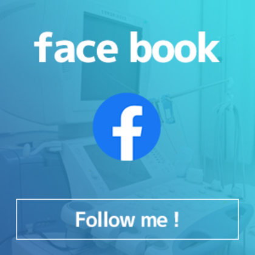
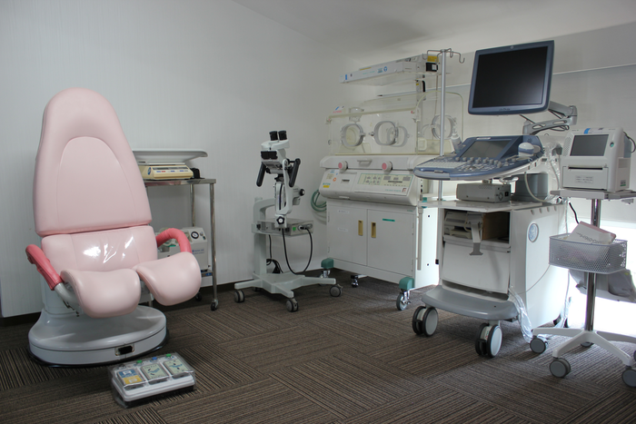
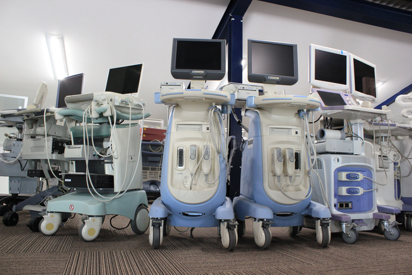
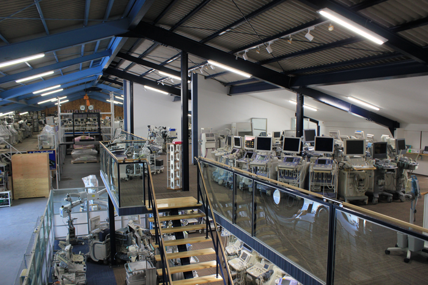
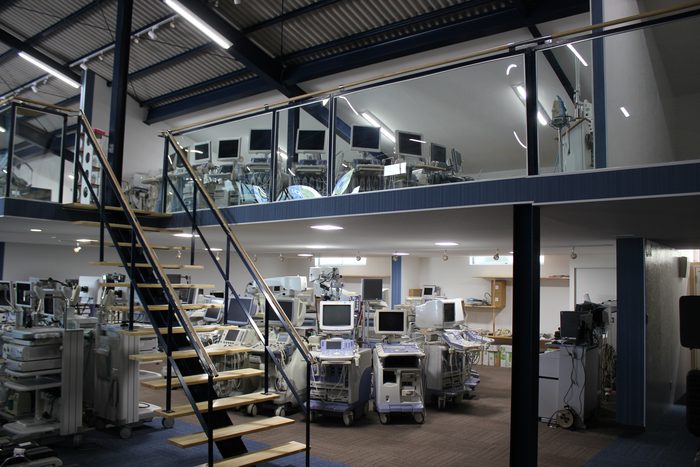
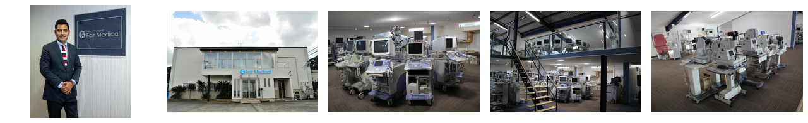
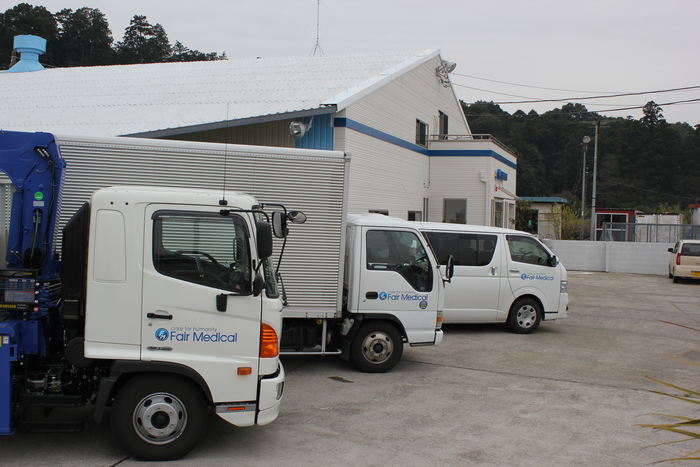
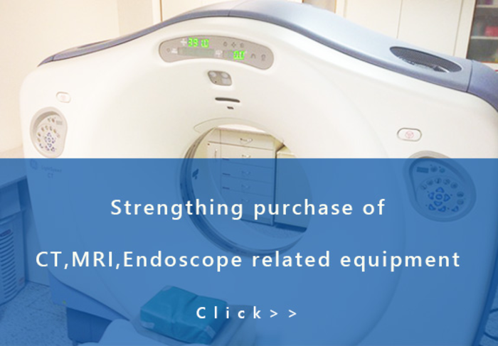

Product Search


News & Events
page updated.
18 Jan 2026
Fair Medical opened updated overseas purchasing support for used medical equipment and sales inquiries.
14 May 2026
A new product inventory has been published. Top page updated.
New arrival information

Ultrasound

Multislice CT
C-Arm

C-Arm
Used Medical Equipments



Please contact us for purchase or sale used medical equipments
We purchase used medical equipment and sell it overseas.
By recycling medical equipment to be disposed of in Japan and arranging fair natural and environmental transactions, we contribute to medical care in developing countries. To sell or purchase used medical devices, please contact us.
Used Medical Equipment that can be Handled
- Angiography
- MRI
- CT
- Ultrasound imaging diagnostic apparatus
- Endoscope
- X-Ray imaging apparatus
- C-arm
- Bone density
- Ophthalmic microscope
- Anesthesia machine
We are strengthening the purchase of high-demand CT and MRI systems. For medical institutions thinking about replacement, leasing companies, clinics, and hospitals, Fair Medical supports assessment, removal, shipment and export coordination.
We also assist with disposal and closure support for medical equipment, office automation equipment, and hospital furnishings.

Corresponding Area
Purchase of Medical Equipment is Nationwide!
Based on the East Japan office and overseas offices, we will deal with sales around the country and arrange staff and technical support nationwide.
- Kanto Area
- Tohoku Area
- Tokai Area
- Kansai Area
- Chugoku, Shikoku and Kyushu Area